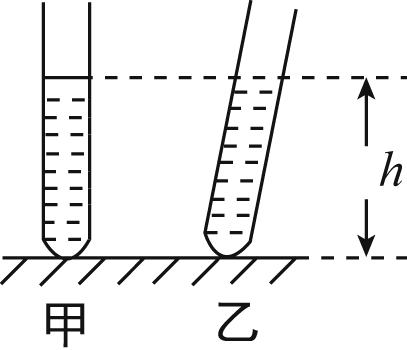
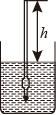
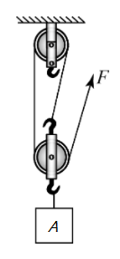
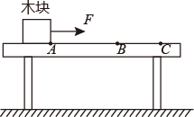

2021年北京市中考物理试题 · 选择题 第11、12、13、14、15题
11. 甲、乙两支完全相同 试管，分別装有质量相等韵液体。甲试管内液体的密度为，乙试管内液体的密度为。将两支试管放置在同一水平桌面上，甲试管竖直。乙试管倾斜，静止时。两试管内液面相平，液面距离桌面的高度为，如图所示。液体对甲。乙两试管底的压强分别为和，则下列判断中正确的是（ ）
试管，分別装有质量相等韵液体。甲试管内液体的密度为，乙试管内液体的密度为。将两支试管放置在同一水平桌面上，甲试管竖直。乙试管倾斜，静止时。两试管内液面相平，液面距离桌面的高度为，如图所示。液体对甲。乙两试管底的压强分别为和，则下列判断中正确的是（ ）

A. <<B. <=
C. >>D. >=
12. 测量工具为我们的工作和生活带来了极大的便利，而成功制作测量工具需要科技人员的创造性劳动。小慧想通过自制密度计，体验动手与动脑相结合的劳动过程。她在粗细均匀的木棒一端缠绕一些细钢丝制成简易密度计（未标刻度）。该密度计放在水和酒精中时均竖直漂浮，露出液面的长度用L表示（如图所示），已知酒精的密度为0.8g/cm3，水的密度为1.0g/cm3为了给简易密度计标刻度，小慧将该密度计放入酒销中，密度计静止时L为6cm，她在密度计上距顶端6m处标记刻度线，该刻度线对应的密度值为0.8g/cm3；小慧将该密度计放入水中，密度计静止时L为8cm，她在密度计上距顶端8cm处标记刻度线。该刻度线对应的密度值为1.0g/cm3利用上述数据，可计算出该密度计上对应密度值为1.25g/cm3的刻度线到密度计顶端的距离为（ ）

A. 9.2cmB. 9.6cmC. 10cmD. 10.4cm
13. 勤思考、爱交流的小琴对电磁的知识进行了总结，并与小文进行交流。小文认为小琴的结论有的正确、有的错误。小琴总结的下列结论中正确的是（ ）
A. 导体中的负电荷在做定向移动时一定产生磁场
B. 改变磁场的方向，通电导线在磁场中的受力方向就发生改变
C. 闭合回路的导体在磁场中做切割磁感线运动时，导体中就产生感应电流
D. 指南针在地磁场中静止时，指南针的N极受到地磁场的作用力
14. 如图所示，用滑轮组提升所受重力为900N的物体A，滑轮组绳子自由端在拉力F作用下竖直匀速移动了12m，同时物体A被竖直匀速提升了4m，用时40s，滑轮组的额外功是400J。下列说法中正确的是（ ）

A. 动滑轮所受的重力为100N
B. 物体A上升的速度是0.3m/s
C. 拉力F的功率是100W
D. 滑轮组的机械效率是90%
15. 如图所示，质量一定的木块放在由同种材料制成的粗糙程度均匀的水平桌面上。木块在水平拉力F作用下从A点由静止开始运动，运动得越来越快；当木块到达B点时。撤去拉力F。木块继续移动，运动得越来越慢。最后停在C点。下列说法中正确的是（ ）

A. 木块在AB所受的摩擦力等于在BC段所受的摩擦力
B. 本块在BC段运动得越来越慢，是由于木块受到摩擦力越来越大
C. 本块在BC段运动得越来越慢，是由于木块的机械能转化为内能，机械能逐渐减小
D. 木块在AB段运动得越来越快，木块的机械能越来越大，机械能没有转化为内能